| 공식 표지 항목 | 기재 내용 |
|---|---|
| 출품학생 | 개인정보 포함본에 기재 / 삭제본에서는 블라인드 처리 |
| 지도교원 | 개인정보 포함본에 기재 / 삭제본에서는 블라인드 처리 |
| 구분 | 학생부 |
| 출품부문 | 지역대회 출품원서와 동일한 부문 기재 |
연구 요약
Ⅰ. 탐구 개요
1. 탐구 동기
2. 탐구 목적
3. 탐구 문제
4. 탐구 기간 및 절차
Ⅱ. 이론적 배경 및 선행 연구 조사
1. 이론적 배경
2. 선행 연구 조사
Ⅲ. 탐구 과정 및 결과
[사전 탐구] 판정 기준과 측정 신호 확정
[기본 탐구 1] 장치 제작 및 시스템 통합
[기본 탐구 2] 실제 적정 데이터 수집
[심화 탐구 1] 명목 이론부피 개발자료 재현 모델
[심화 탐구 2] 자동정지 소프트웨어 구현
Ⅳ. 논의 및 한계
Ⅴ. 결론 및 활용
Ⅵ. 생성형 AI 활용 목적 및 범위
Ⅶ. 참고문헌
부록
A. 별도 개발 중인 Android 확장
B. 보고서 수치 재현 자료
HWPX에서는 자동 차례를 적용하여 최종 쪽수를 갱신한다.
[그림 1] 전체 탐구 흐름
[그림 2] 국립중앙과학관 전람회 통합검색 결과
[그림 3] RISS 선행연구 검색 결과
[그림 4] 제작한 시린지 펌프와 실제 습식 적정 장치
[그림 5] 자동 적정 보조 시스템의 데이터 흐름
[그림 6] 실제 적정 중 Windows 통합 대시보드
[그림 7] 실제 습식 적정 실험 구성
[그림 8] 수집 데이터 구성 요약
[그림 9] 12개 run의 정규화 색·열화상 변화
[그림 10] 명목 이론부피 개발자료 재현 모델의 절차
[그림 11] 명목 이론부피와 개발자료 재현값
[그림 12] 명목 이론부피 대비 개발자료 상대편차
[그림 13] 기본 꺼짐 자동정지 소프트웨어의 판정 흐름
[표 1] 탐구 기간 및 절차
[표 2] 탐구 단계별 질문과 확인 자료
[표 3] 주요 선행연구와 본 작품의 차이
[표 4] 자동 적정 보조 시스템 구성
[표 5] 실제 원본 CSV의 주요 저장 항목
[표 6] 실제 습식 적정 실험 조건
[표 7] 수집 데이터 규모
[표 8] 적정 종류별 개발 데이터 결과
[표 9] run별 명목 이론부피와 개발자료 재현값
[표 10] 연구 결과의 증거 수준
[표 11] 가능한 오차 원인과 확인 범위
[표 12] 생성형 AI 활용 이력
[표 13] 보고서 수치 재현 자료
산·염기 적정에서는 지시약의 색이 변한 순간에 실험자가 직접 주입을 멈춘다. 종말점 부근의 색 변화가 짧거나 완만하면 관찰자에 따라 정지 시점이 달라질 수 있고, 실험이 끝난 뒤에는 당시의 색, 온도, 주입량을 다시 확인하기 어렵다. 본 연구에서는 이 문제를 줄이기 위해 일반 카메라의 색 변화, HIKMICRO Mini2 열화상 카메라로 관찰한 용액·용기 영역의 겉보기 표면온도 변화, 시린지 펌프의 계산 주입량을 같은 시간축에 기록하는 자동 적정 보조 시스템을 제작하였다.
스테퍼 모터와 T8 리드스크류를 이용해 100 mL 주사기를 구동하는 펌프를 만들고, 이를 일반 카메라·Mini2·화학 계산·CSV 저장 기능이 통합된 Windows 대시보드와 연결하였다. 실제 적정에서는 강산-강염기, 강산-약염기, 약산-강염기, 약산-약염기의 네 적정 종류를 0.10 M, 0.15 M, 0.20 M 시료 농도에서 각 1회씩 수행하였다. 시료 부피는 20.0 mL, 적정액의 명목 농도는 0.10 M였으며, 총 12개 실험 CSV에 1,822개의 시간축 행을 기록하였다.
실험 뒤 Windows 수집기는 Mini2 미리보기와 녹화 저장 경로를 분리하고, 녹화 프레임은 순서가 보존되는 대기열에서 모두 처리하도록 개선하였다. 저장 raw 프레임과 공식 DLL을 이용한 250프레임 시험에서는 24.93행/s, 처리 지연 p95 8.91 ms, 기록 누락 0행을 확인하였다. 이는 공식 온도 변환과 CSV 처리 경로의 성능 시험이며, 기존 12개 습식 실험 자료를 25 fps 자료로 소급하거나 실제 USB 습식 운전 성능으로 간주하지 않았다.
수집 자료를 이용한 초기 곡선 후보 회귀 분석은 명목 이론부피와 비교했을 때 MAE 2.31 mL, RMSE 3.01 mL, MAPE 8.81%였다. 이후 현재 주입량과 색·열화상 특징을 이용해 프레임이 명목 이론 당량점 주변 구간에 속하는지를 분류하고, 적정 종류별로 모델과 집계 방식을 선택하였다. 같은 12개 개발 실험에서 선택한 재현값은 MAE 0.39 mL, RMSE 0.69 mL, MAPE 1.27%였다. 그러나 모델 선택과 평가에 같은 소규모 자료를 사용했고, 독립적으로 측정한 실제 당량점 참값도 없으므로 1.27%는 새로운 실험에 대한 일반화 성능이 아니라 개발 데이터에서 명목 이론부피를 재현한 탐색 결과이다.
12개 습식 실험은 사람이 펌프를 정지하는 방식으로 수행하였다. 이후 Windows 앱에 사용자가 직접 선택해야 활성화되는 기본 꺼짐 상태의 자동정지 소프트웨어를 추가하였다. 이 기능은 일반 카메라 ROI의 초기색을 보정한 뒤, 실시간 구간 분류기 점수가 기준을 넘으면서 시작된 지시약 색 변화가 일정 시간 지속될 때 정지 명령을 전송한다. 명목 이론 당량점은 정지 조건으로 사용하지 않는다. 단위시험과 통합시험은 수행했지만, 실제 산·염기 실험에서의 정지 부피·지연·과주입량은 본 연구 결과로 검증하지 않았다.
현재 실험 수집의 본경로는 Windows 앱이다. ROI는 녹화 전에 사용자가 사각형으로 지정해 고정하는 방식을 기본으로 하며, 선택형 자동 ROI 탐색은 설정 단계에서 후보를 찾는 보조 기능으로만 사용한다. Android 앱은 별도 작업에서 개발 중인 확장 시제품이므로 본 보고서의 12개 습식 실험, 25 fps 처리 시험과 머신러닝 성능 결과에 포함하지 않았다.
본 연구가 직접 입증한 핵심은 상용 자동적정기 수준의 정확도가 아니다. 학생이 제작한 장치에서 색·열화상·주입량을 실제 적정 중 동기화하고, 실험 뒤 다시 분석할 수 있는 자료로 저장했으며, 그 자료를 명목 이론부피 재현 분석과 후속 제어 연구로 연결했다는 데 의미가 있다.
적정에서 화학량론적으로 반응이 완료되는 지점은 당량점이고, 실험자가 지시약의 색 변화로 관찰하는 지점은 종말점이다. 두 지점은 지시약의 변색 범위, 용액의 실제 농도, 혼합 상태와 관찰 시점에 따라 달라질 수 있다. 특히 종말점 부근에서 주입을 멈추는 판단은 짧은 시간 안에 이루어지므로, 사람이 본 장면과 주입량을 나중에 다시 확인할 수 있는 기록이 필요하다고 생각하였다.
이 연구의 착상에는 자격루의 계량 방식도 영향을 주었다. 자격루의 구조를 재현한 것은 아니지만, 일정한 흐름을 시간과 연결하고 특정 시점의 사건을 기록한다는 개념을 적정에 적용하였다. 시린지 펌프가 비교적 일정한 속도로 움직이면 작동 시간은 주입량 추정치로 바뀐다. 여기에 같은 시점의 색과 열화상 값을 붙이면, 어느 부피에서 어떤 변화가 나타났는지 사후에 검토할 수 있다.
본 연구의 목적은 다음과 같다.
본 연구의 핵심 질문은 세 가지이다.
첫째, 제작한 펌프와 두 카메라를 실제 적정에서 함께 구동하고, 색·열화상·주입량을 동일 시간축으로 저장할 수 있는가?
둘째, 현재 주입량과 색·열화상 특징을 사용한 구간 분류 모델은 수집한 12개 개발 실험에서 명목 농도로 계산한 이론부피를 어느 정도 재현하며, 적정 종류별로 어떤 차이를 보이는가?
셋째, 이론 당량점을 미리 정지 기준으로 넣지 않고 실시간 구간 분류기의 확인과 초기색 대비 지속적인 색 변화를 결합한 판정 구조를 기본 꺼짐 상태의 자동정지 소프트웨어로 구현할 수 있는가?
첫째와 둘째는 실제 습식 실험과 저장 자료를 대상으로 하였다. 셋째는 실험 종료 후 추가한 소프트웨어 기능으로, 실제 산·염기 자동정지 성능과는 구분하였다.
[표 1] 탐구 기간 및 절차
| 시기 | 탐구 단계 | 확인 자료 |
|---|---|---|
| 실험 전 | 문제 정의, 장치 설계, 펌프 조립과 물 토출 점검 | 설계 문서, 펌프 사진, 앱 설정 유량 0.99 mL/s |
| 2026. 6. 1. | 네 적정 종류×세 농도의 실제 습식 실험 | 원본 CSV 12개, 총 1,822행 |
| 2026. 6. 2. | 초기 곡선 후보 회귀 분석 | MAE 2.31 mL, MAPE 8.81% |
| 2026. 6. 9. | 진행도 누수 정보를 제외한 구간 분류 모델 비교 | 개발 데이터 MAPE 1.27%, 독립 검증 없음 |
| 2026. 7. | Windows 수집 성능 보강, 선택형 ROI·자동정지 구현, 전국대회 원고 재검토 | 공식 DLL 250프레임 시험 24.93행/s·p95 8.91 ms·누락 0행, 자동정지 모듈 8건·Windows 수집기 136건 시험 |
탐구 흐름
문제 발견 → 장치 제작 → 펌프·센서 통합 → 12회 습식 적정 → 원본 CSV 감사 → 모델 개선 → 수집 성능 보강 → 자동정지 소프트웨어 구현 → 한계와 후속 검증 정리
[표 2] 탐구 단계별 질문과 확인 자료
| 탐구 단계 | 핵심 질문 | 이번 연구에서 사용한 확인 자료 |
|---|---|---|
| 사전 탐구 | 무엇을 당량점 참값과 센서 관찰값으로 구분할 것인가? | 명목 농도 계산값, 지시약 색도, Mini2 ROI, 펌프 시간 |
| 기본 탐구 | 실제 적정 중 여러 장치를 함께 구동하고 기록할 수 있는가? | 실제 습식 실험 12 run과 1,822행 CSV |
| 심화 탐구 1 | 저장 자료가 명목 이론부피를 어느 정도 재현하는가? | leave-one-run-out 분석과 개발 모델 비교표 |
| 심화 탐구 2 | 이론 부피를 정지 gate로 쓰지 않는 후속 제어 구조를 만들 수 있는가? | ML 확인+지속 색 변화 자동정지 코드와 소프트웨어 시험 |
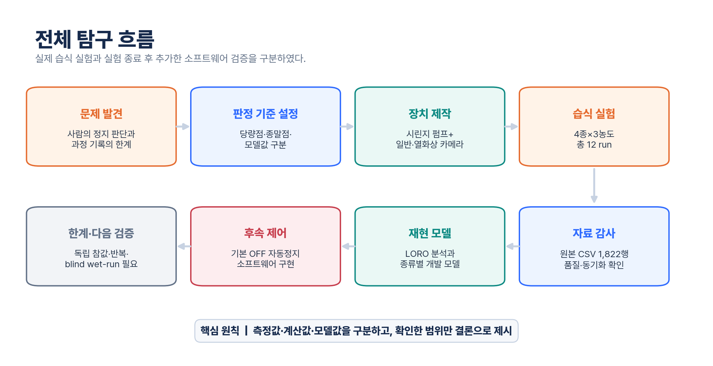
그림 1. 실제 습식 실험으로 확인한 범위와 실험 종료 후 추가한 소프트웨어 구현을 분리한 전체 탐구 흐름.
IUPAC은 당량점을 적정액과 시료가 반응식의 화학량론에 따라 완전히 반응한 단계로 정의한다. 지시약의 색 변화로 관찰한 종말점은 당량점과 가까울 수 있지만 항상 같지는 않다. 따라서 본 연구에서는 다음 세 값을 구분하였다.
본 실험 CSV에는 독립 기준법으로 측정한 실제 당량점과 사람이 판독한 종말점 값이 채워져 있지 않다. 따라서 결과표의 오차는 실제 화학적 당량점에 대한 절대오차가 아니라 명목 이론부피와 개발자료 재현값 사이의 편차이다.
시료 농도를 (C_s), 시료 부피를 (V_s), 시료 반응 가수를 (n_s), 적정액 농도를 (C_t), 당량점까지의 적정액 부피를 (V_t), 적정액 반응 가수를 (n_t)라고 하면 다음 식을 사용하였다.
따라서 명목 이론 당량점 부피는 다음과 같다.
모델이 산출한 부피를 (\hat{V}_t)라고 하면 미지 시료의 농도는 다음 식으로 역산한다.
현재 Windows 앱은 ML 산출 부피가 만들어졌을 때 이 식으로 미지 시료 농도를 계산한다. 산과 염기의 세기는 이 당량 관계를 바꾸지 않지만, 당량점 pH와 지시약 종말점의 위치에는 영향을 준다. 이번 결과에서는 독립 기준 당량점이 없으므로 이 농도값을 실제 미지 시료 농도 측정 결과로 사용하지 않았다.
본 실험의 산과 염기는 모두 1:1 당량으로 계산하였다. 시료 20.0 mL, 적정액 0.10 M 조건에서 시료 농도 0.10 M, 0.15 M, 0.20 M의 명목 이론 당량점은 각각 20.0 mL, 30.0 mL, 40.0 mL이다.
Windows 앱은 적정 종류에 따라 당량점 pH와 주입 부피별 이론 pH 곡선을 계산한다. 약산의 pKa 후보는 IUPAC Dissociation Constants에서 내려받은 고신뢰도 로컬 CSV에서 찾고, 물질명과 측정 온도를 기준으로 상온에 가까운 값을 우선 선택하도록 하였다. 약염기의 pKb는 실험 설정값을 사용하며, 현재 암모니아수 기본값은 4.75이다. 페놀프탈레인, 메틸오렌지와 BTB의 변색 범위도 함께 저장해 계산 pH 구간과 지시약 종말점을 비교할 수 있게 하였다. 이 pH는 전극으로 측정한 값이 아니라 농도와 평형상수로 계산한 모델값이다.
이온 세기는 (I=\frac{1}{2}\sum c_i z_i^2)로 계산할 수 있으며, 프로그램에는 Davies 식의 활동도 계수 계산과 이온 세기에 따른 적용 범위 분류가 구현되어 있다. 다만 현재 실시간 대시보드는 이를 실측 pH 보정값으로 확정하지 않고, 계산값의 해석에 주의가 필요한지를 나타내는 메타데이터와 경고로 사용한다.
일반 카메라에서는 용액 ROI의 RGB와 HSV 평균, 프레임 간 변화량, 초기 기준값 대비 변화량과 시간 기울기를 계산하였다. HSV는 색조·채도·명도를 나누어 보기 때문에 지시약의 색 변화와 조명 밝기 변화를 구분하는 데 참고할 수 있다.
Mini2는 256×344 UVC raw frame을 제공하며, 프로그램은 위쪽 256×192 영역과 부가 정보를 분리해 HIKMICRO 공식 DLL의 MT_Process_INT 경로로 처리한다. 이 함수가 반환한 64배 정수 온도값을 64.0으로 나누어 256×192 섭씨 행렬을 만든다. 즉, 카메라 raw 픽셀값 자체를 바로 64로 나누는 근사 변환이 아니다.
다만 열화상 카메라가 보는 값은 용액 내부의 벌크 온도를 직접 측정한 값이 아니다. 카메라가 바라본 용액 표면 또는 용기 영역의 겉보기 표면온도이며, 방사율, 반사, 주변온도, 촬영 각도, 용기 재질과 교반 상태의 영향을 받는다. 따라서 본 연구에서는 열화상 신호를 독립적인 당량점 참값으로 사용하지 않고 색 변화와 함께 기록하는 보조 관찰값으로 사용하였다.
100 mL 주사기의 내경을 약 35 mm, T8 리드스크류의 이동량을 2 mm/rev, 모터 속도를 약 0.5 rev/s로 두면 이론 유량은 약 0.962 mL/s이다.
물 토출 점검 뒤 실제 실험 앱의 설정 유량을 0.99 mL/s로 두었다. 이는 이론 유량보다 약 2.9% 큰 값이다. 다만 개별 물 토출 측정값과 측정 시각은 현재 보존 자료에서 확인되지 않아 평균·표준편차와 불확도를 재계산할 수 없다. 따라서 0.99 mL/s는 재현된 정밀 보정 결과가 아니라 실험 당시 사용한 설정값으로 다루었다. CSV의 주입량도 펌프 작동 시간에 이 값을 곱한 추정치이며, 펌웨어가 실측 부피를 되돌려 준 값은 아니다.
선행 적정 연구와 장치는 주로 pH·전위차·전기전도도·광학 흡광도·색 변화 또는 온도 변화 중 한 가지 검출 방식과 정밀 뷰렛을 결합한다. 본 작품이 새로운 적정 원리를 발견한 것은 아니다. 차별성은 학교에서 제작 가능한 부품을 이용해 다음 요소를 하나의 시간·부피축에 연결한 방식에 있다.
[표 3] 주요 선행연구와 본 작품의 차이
| 선행연구 | 선행연구의 방법 | 본 작품과의 차이 |
|---|---|---|
| Siqueira et al. (2017) | 웹캠 영상의 R 성분 상관계수로 적정곡선을 만들고 회귀·미분으로 종말점을 구해 밸브를 제어 | 가시광 단일 경로의 flow-batch 방식이다. 본 작품은 색·열화상·계산 주입량을 같은 시간축에 저장한다. |
| Tan et al. (2020) | Python, USB 웹캠과 프로그래머블 시린지 펌프로 HCl-KOH 적정의 RGB 임계값을 검출하고 펌프를 정지 | 카메라+시린지 펌프 자동 적정은 이미 보고되었다. 본 작품의 12개 습식 실험은 네 적정 종류를 대상으로 했으며 최종 정지는 사람이 수행했다. |
| Alessio et al. (2020) | 비접촉 적외선 온도센서, Raspberry Pi와 자작 시린지 펌프로 열적정을 수행 | 비접촉 열 신호를 이용한 자동 적정도 선행 사례가 있다. 본 작품은 단일 온도점 대신 열화상 ROI와 가시광 색도를 함께 저장하지만, 열화상의 독립적 향상 효과는 입증하지 못했다. |
| del Castillo-Santaella et al. (2023) | Arduino 오픈소스 펌프와 pH 미터 출력을 연결해 주입 부피와 pH를 저장 | 저비용 Arduino 펌프와 기록 기능은 이미 존재한다. 본 작품은 pH 전극 대신 색상 영상·열화상 ROI와 동기화 품질을 기록한다. |
| Olbemo et al. (2025) | 디지털 영상의 RGB·Hue·휘도로 여러 산·염기계의 종말점을 검출 | 여러 산·염기계의 영상 색도 검출도 선행 사례가 있다. 해당 연구는 연속 flow-ratiometry이고 본 작품은 시린지 주입량과 두 영상 채널을 CSV로 동기화한다. |
| Zhang et al. (2025) | 영상 특징과 의사결정나무로 주입 속도와 종말점 정지를 제어한 산화환원 역적정 | 영상 ML과 펌프 폐루프 제어 역시 넓은 적정 분야에 존재한다. 반응 종류가 다르고 열화상 융합을 사용하지 않는다. |
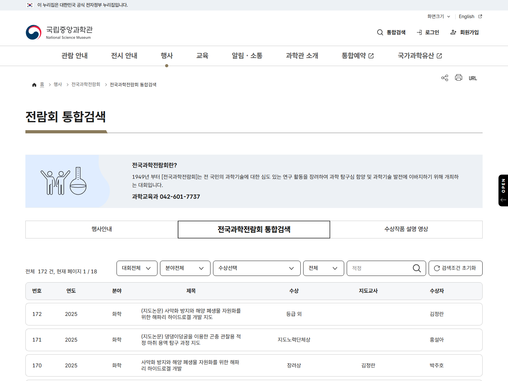
그림 2. 국립중앙과학관 전국과학전람회 통합검색에서 적정을 검색한 결과 화면(검색일 2026-07-14). 동일·유사 작품의 존재 여부를 확인하기 위한 키워드 검색으로 사용하였다.
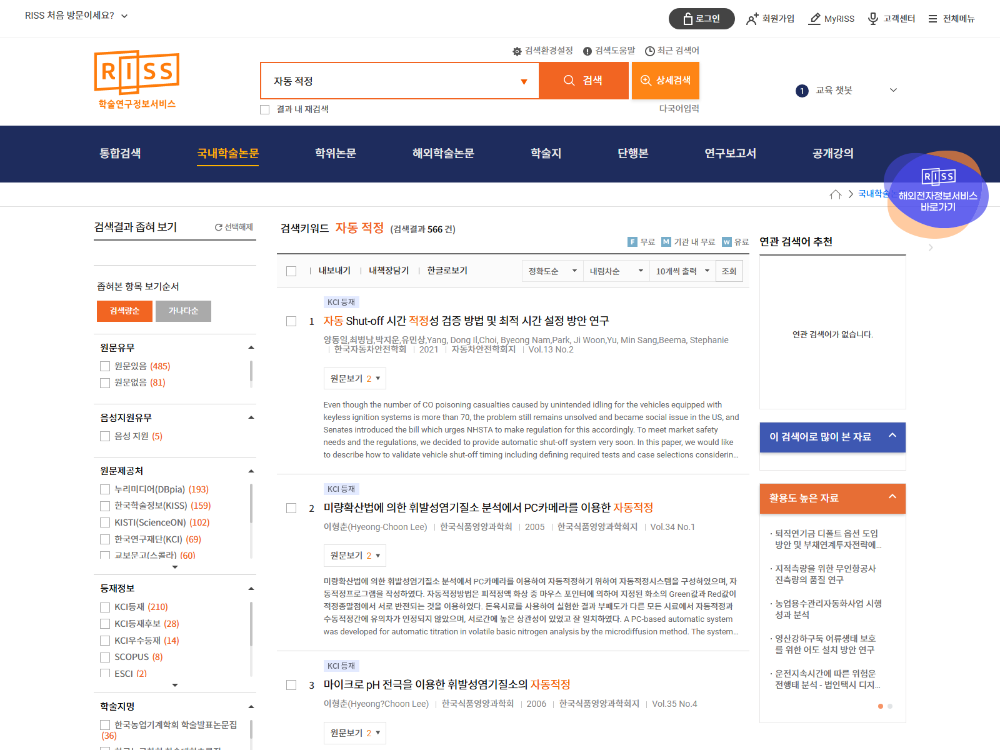
그림 3. 학술연구정보서비스(RISS) 국내학술논문에서 자동 적정을 검색한 결과 화면(검색일 2026-07-14). 검색 결과를 출발점으로 삼고, 본문의 직접 비교는 DOI와 출판사 원문을 확인한 논문을 기준으로 하였다.
가장 가까운 선행 사례는 가시광 카메라·시린지 펌프·RGB 자동정지를 결합한 Tan et al. (2020)과 비접촉 적외선 온도 측정·시린지 펌프를 결합한 Alessio et al. (2020)이다. 따라서 본 작품은 카메라, 열센서, 시린지 펌프 또는 머신러닝의 최초 적용을 주장하지 않는다. 차별성은 이들을 학생 제작 장치 안에서 가시광 색도·방사온도형 열화상 ROI·계산 주입량의 하나의 추적 가능한 데이터 흐름으로 구성하고, 네 가지 산·염기 조합에서 비교한 데 있다.
이번 조사는 DOI와 출판사 원문이 확인되는 논문을 중심으로 한 제한적 검색이다. 특허와 국내 학술DB, 전국과학전람회 역대 출품작 전체를 포괄하지 않으므로 완전히 동일한 구성을 발견하지 못했다는 사실을 최초성의 근거로 사용하지 않는다.
적정 장치를 제작하기 전에 당량점, 지시약 종말점, 개발자료 재현값을 서로 다른 값으로 정의하였다. 또한 일반 카메라의 색 변화와 Mini2의 겉보기 표면온도는 독립 참값이 아니라 반응 진행을 관찰하는 신호로 사용하고, 펌프 부피는 시간×설정 유량으로 계산한 추정값으로 다루었다.
이 단계에서 장치 성능을 먼저 주장하지 않고, 이후 실험에서 무엇을 측정값·계산값·모델값으로 부를지 기준을 고정하였다. 이 구분은 개발 데이터 오차를 실제 당량점 정확도로 과장하지 않기 위한 기준이 되었다.
펌프는 100 mL 주사기, 스테퍼 모터, A4988 드라이버, T8 리드스크류, 커플러, 푸셔 블록, 가이드 레일과 주사기 고정대로 구성하였다. 주사기 몸통을 고정하고 푸셔 블록이 피스톤 뒤판을 밀도록 설계하였다. 리드스크류와 푸셔 블록의 정렬, 피스톤 마찰, 호스 내부 기포가 주입량에 영향을 줄 수 있어 실험 전에 물로 프라이밍하였다.
[표 4] 자동 적정 보조 시스템 구성
| 구성 요소 | 역할 |
|---|---|
| Arduino Uno | 펌프 문자 명령 수신 및 모터 제어 |
| A4988 드라이버 | STEP, DIR, ENABLE 신호로 스테퍼 모터 구동 |
| T8 리드스크류 | 모터 회전을 피스톤의 직선 운동으로 변환 |
| 100 mL 주사기 | 적정액 저장 및 토출 |
| 3D 프린팅 고정대·푸셔 | 주사기 고정과 피스톤 이동 유지 |
| 일반 카메라 | 지시약 색 변화 기록 |
| HIKMICRO Mini2 | 용액·용기 ROI의 겉보기 표면온도와 raw 변화 기록 |
실험에 사용한 Arduino 펌웨어 명령은 a(후퇴), b(주입), c(정지)이다. 펌웨어는 펌프 상태나 실측 스텝 수를 앱으로 되돌려 주지 않는다. 이상 동작 시에는 화면의 정지 명령을 먼저 사용하고, 통신이 되지 않으면 모터 전원을 차단하도록 하였다. 독립된 하드웨어 비상정지 회로는 없으므로 펌프를 무인 상태로 운전하지 않았다.
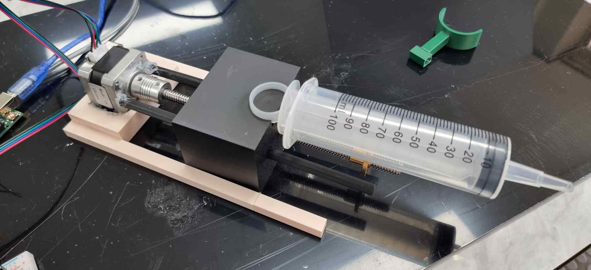
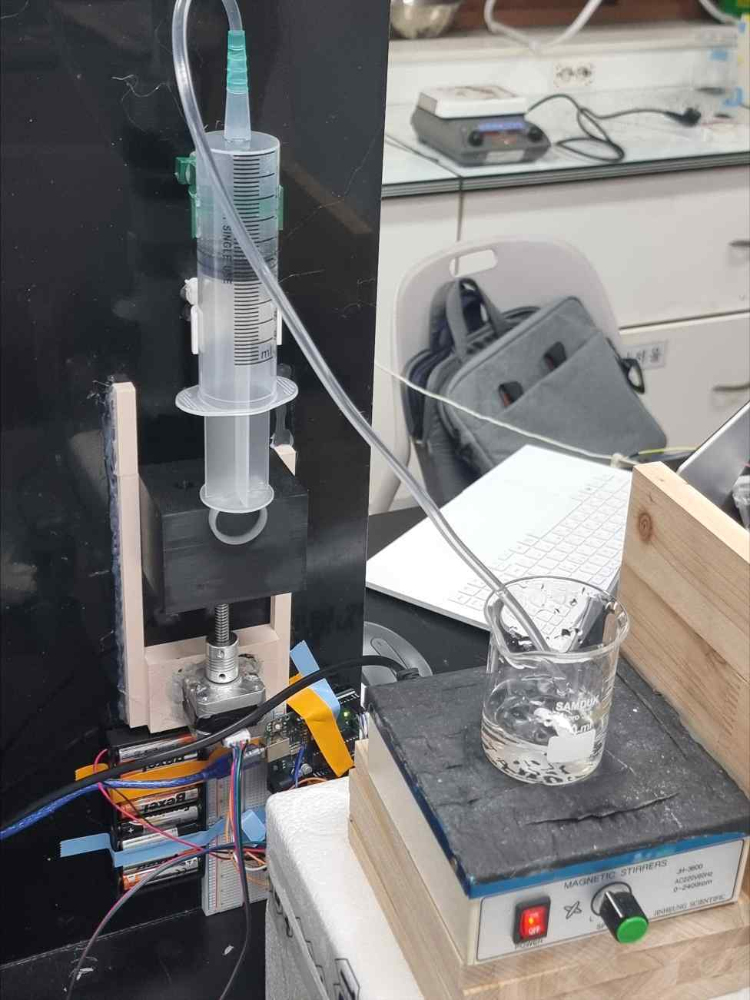
그림 4. 제작한 100 mL 시린지 펌프(위)와 실제 습식 적정 실험 장치(아래). 펌프의 호스가 교반 중인 비커로 연결되어 있다.
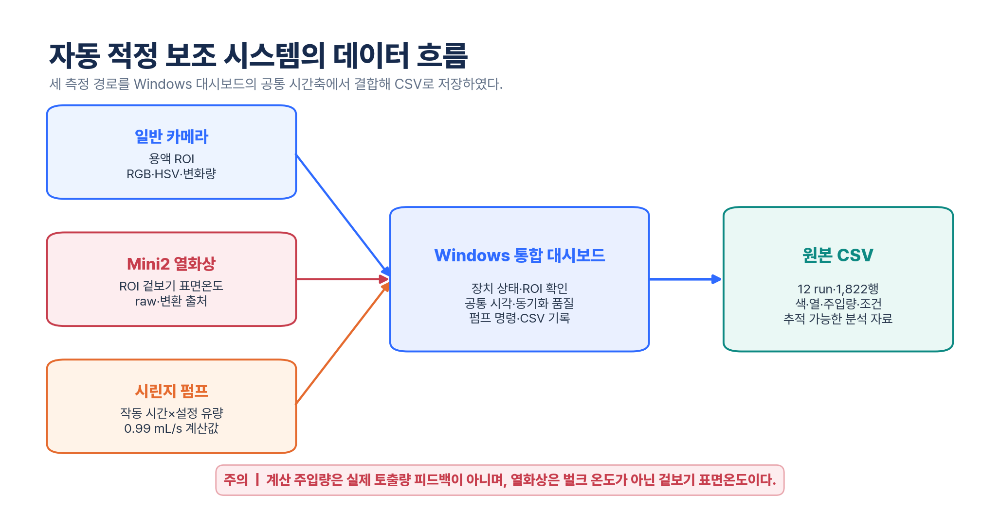
그림 5. 일반 카메라·Mini2·시린지 펌프의 값을 Windows 대시보드에서 같은 시간축으로 결합해 원본 CSV로 저장한 흐름.
현재 실험 수집의 본경로인 Windows 앱은 웹 대시보드와 실시간 수집기로 구성된다. 다음 기능을 한 화면에 모았다.
ROI는 실험자가 사각형으로 지정해 녹화 전에 고정하는 방식을 기본으로 한다. 자동 ROI는 사용자가 직접 켠 경우에만 설정 단계에서 후보를 찾고, ROI가 고정되거나 녹화가 시작되면 자동 갱신을 끈다. visible 후보에는 선택적으로 YOLO를 사용할 수 있지만 기본 상태에서는 모델을 설치하거나 불러오지 않는다. thermal 후보는 visible ROI와 분리해 처리한다. 이 기능은 투명 비커를 항상 정확히 검출하는 기능이나 녹화 중 자동 추적 기능으로 해석하지 않았다.
12개 실제 실험 자료는 Windows 경로에서 수집하였다. Mini2 값은 mini2_uvc_raw_official_roi_celsius 경로로 기록되었고, 일반 카메라와 열화상 카메라의 시각 차이와 동기화 상태도 함께 저장하였다. 당시 CSV의 저장 행률은 약 3.10~4.60행/s였다.
실험 뒤에는 Mini2 미리보기는 최신 frame만 표시하고 녹화 frame은 순서가 보존되는 대기열에서 모두 처리하도록 구조를 바꾸었다. 저장 raw frame과 Windows 공식 DLL을 이용한 250 frame 시험에서 24.93행/s, 처리 지연 p95 8.91 ms, 기록 누락 0행을 확인하였다. 수집기는 실제 캡처 속도, 처리 대기량과 누락 frame 수를 CSV와 화면에 표시하며, 종료 시 대기열이 빌 때까지 기다린 뒤 파일을 확정한다. 이 결과는 저장 raw frame을 사용한 처리 경로 시험이므로 실제 Mini2 USB 상태와 습식 실험 전체의 25 fps 성능은 실험 전에 별도로 확인해야 한다.
[그림 6 삽입: 실제 적정 중 Windows 대시보드 전체 화면. 색 ROI, 열 ROI, 펌프 상태와 저장 행 수가 보이도록 캡처]
CSV는 단순한 최종 결과표가 아니라 적정 과정의 시간축 원자료이다.
[표 5] 실제 원본 CSV의 주요 저장 항목
| 구분 | 실제 12개 원본 CSV에 저장된 주요 값 |
|---|---|
| 실험 조건 | 적정 종류, 시료·적정액 이름, 명목 농도, 시료 부피, 지시약 |
| 시간 | 프레임 시각, 녹화 경과 시간, 카메라 간 동기화 차이 |
| 펌프 | 펌프 작동 시간, 설정 유량 0.99 mL/s, 계산 주입량 |
| 일반 영상 | ROI의 RGB·HSV 평균과 변화량 |
| 열화상 | ROI의 겉보기 섭씨값·raw 분포와 변화량, 변환 출처 |
| 품질 | ROI 상태, 동기화 품질, 학습 사용 가능 여부 |
| 화학 계산 | 명목 이론 당량점, 지시약 변색 pH 범위, 상수 조회 상태와 경고 |
실험 당시 원본 CSV에는 펌웨어가 확인한 스텝 수, 실측 주입량, 독립 기준 당량점과 최종 ML 산출값이 기록되지 않았다. ML 재현값은 원본 CSV를 보존한 뒤 별도의 후처리 산출물에서 계산하였다.
시린지 펌프, 일반 카메라, Mini2와 Windows 대시보드를 하나의 수집 경로로 연결하고, 각 시점의 센서값·계산 주입량·동기화 정보를 CSV에 남기는 구조를 완성하였다. 다만 펌웨어의 실제 스텝 수와 토출 부피를 되돌려 받는 폐루프 구조는 아니므로, 다음 단계에서는 이 시스템이 실제 습식 적정 중 연속 자료를 저장하는지 확인하였다.
실제 저장된 CSV를 기준으로 실험 조건을 다시 정리하면 다음과 같다.
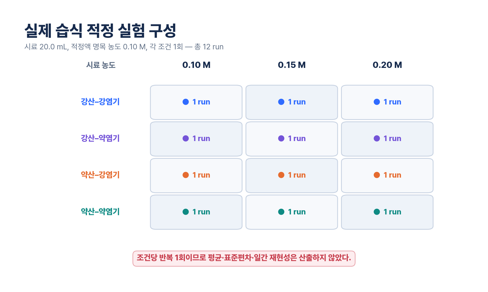
그림 7. 네 적정 종류와 세 시료 농도를 조합한 12개 실험 구성. 각 조건은 1회씩 수행하였다.
[표 6] 실제 습식 적정 실험 조건
| 적정 종류 | 시료 | 적정액 | 시료 농도 | 시료 부피 | 적정액 명목 농도 | 지시약 | 조건별 반복 |
|---|---|---|---|---|---|---|---|
| 강산-강염기 | 염산 | 수산화나트륨 | 0.10, 0.15, 0.20 M | 20.0 mL | 0.10 M | 페놀프탈레인 | 각 1회 |
| 약산-강염기 | 아세트산 | 수산화나트륨 | 0.10, 0.15, 0.20 M | 20.0 mL | 0.10 M | 페놀프탈레인 | 각 1회 |
| 강산-약염기 | 염산 | 암모니아수 | 0.10, 0.15, 0.20 M | 20.0 mL | 0.10 M | 메틸오렌지 | 각 1회 |
| 약산-약염기 | 아세트산 | 암모니아수 | 0.10, 0.15, 0.20 M | 20.0 mL | 0.10 M | 메틸오렌지 | 각 1회 |
NaOH를 적정액으로 사용한 6개 run에는 페놀프탈레인을, NH₃(aq)를 적정액으로 사용한 6개 run에는 메틸오렌지를 사용하였다. 이 선택은 실제 실험 기록을 그대로 적은 것이다. 특히 약산-약염기 조건에서 메틸오렌지 종말점이 명목 이론 당량점과 잘 일치한다고 보장할 수 없으므로, 지시약 색 변화 자체를 정답으로 사용하지 않았다.
[표 7] 수집 데이터 규모
| 항목 | 값 |
|---|---|
| 실험 날짜 | 2026년 6월 1일 |
| 적정 종류 | 4종 |
| 농도 조건 | 3개 |
| 총 실험 수 | 12 run |
| 조건별 반복 | 1회 |
| 총 저장 행 수 | 1,822행 |
| 원본 CSV 보존 행률 | 약 3.10~4.60행/s |
| 명목 이론 당량점 | 20.0, 30.0, 40.0 mL |
현재 수집 프로그램은 25 fps 목표로 저장 경로를 개선했지만, 본 분석에 사용한 12개 원본 CSV를 25 fps 데이터라고 표현하지 않았다. 프레임 행 수가 많더라도 독립 실험 수는 12개이다.
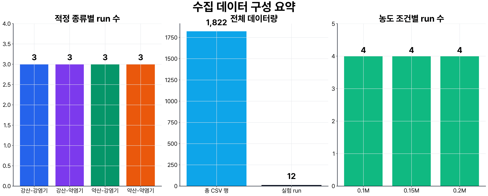
그림 8. 적정 종류별·농도별 run 수와 총 CSV 행 수. 조건당 한 번만 측정했으므로 반복성 통계로 해석하지 않았다.
12개 실험은 후속 자동 ROI와 자동정지 기능을 사용해 수행한 것이 아니다. ROI는 실험자가 확인했으며 실제 실험 중 최종 펌프 정지는 사람이 담당하였다. 현재의 선택형 자동 ROI와 자동정지는 이 원본 자료를 수집한 뒤 보강한 Windows 소프트웨어 기능이므로 습식 검증 결과로 소급하지 않았다.
제작한 시린지 펌프는 Windows 대시보드의 a, b, c 명령에 따라 후퇴·주입·정지하였다. 실제 적정 과정에서 일반 카메라, Mini2 열화상, 계산 주입량과 화학 조건이 동시에 화면에 표시되었고 총 12개 CSV가 저장되었다. 이는 장치의 각 부분을 따로 시험한 결과가 아니라, 실제 습식 적정에서 하나의 데이터 흐름으로 연결한 결과이다.
일반 카메라와 열화상 신호의 변화 형태는 적정 종류와 농도에 따라 달랐다. 다만 아래 그림은 각 run을 0~1로 정규화해 변화 모양을 비교한 것으로, 절대 온도나 중화열 크기를 직접 비교한 그래프가 아니다.
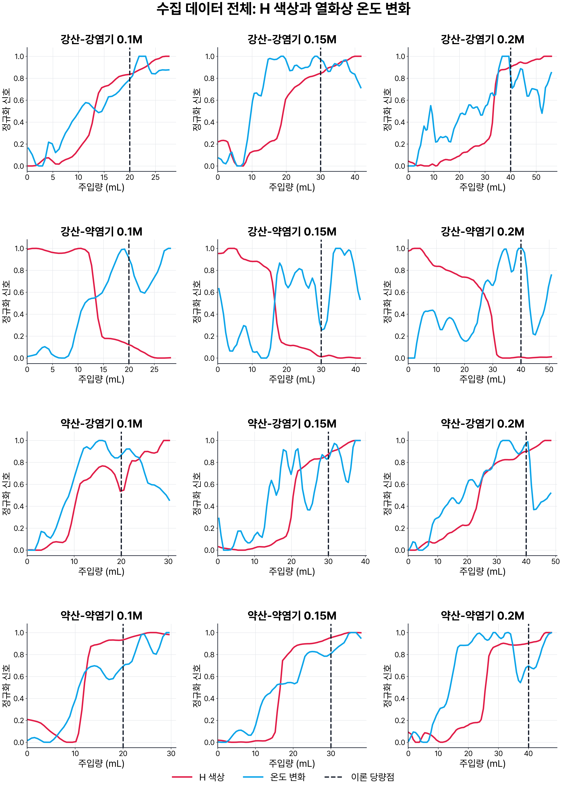
그림 9. 12개 run의 주입량에 따른 정규화 H 색상과 열화상 ROI 변화. 점선은 명목 이론 당량점이다. 이 그림만으로 열화상 변화가 당량점을 독립적으로 검출했다고 결론 내리지는 않았다.
열화상 변환 출처는 1,822행 모두 mini2_uvc_raw_official_roi_celsius로 기록되었다. 다만 session 4의 5행과 session 9의 6행에서 ROI 평균값이 0.0으로 저장된 구간이 확인되었다. 이 값이 실제 표면온도가 아니라 순간적인 변환·수집 이상일 가능성을 배제할 수 없으므로, 열화상 자료가 전 구간에서 결측 없이 측정되었다고 보지 않았다.
실제 습식 적정 12회에서 펌프·일반 카메라·Mini2·CSV 저장을 하나의 흐름으로 구동하였다. 이 단계에서 확인한 성과는 자동정지 정확도가 아니라, 서로 다른 장치의 값을 같은 시간축에 남겨 실험 뒤 재검토할 수 있게 한 것이다. 조건별 반복은 1회이므로 재현성 통계로 확대하지 않았다.
현재 당량점 추정 모델은 각 프레임이 명목 이론 당량점 주변의 일정 부피 구간에 포함되는지를 분류하고, 분류 점수가 높은 프레임들의 현재 주입량을 집계해 run 하나당 예측 부피 하나를 만든다.
모델의 입력에는 실험 중 얻을 수 있는 다음 값이 포함된다.
실시간으로 입력·계산 가능한 시료 부피, 적정액 농도, 반응 가수, 지시약 변색 범위, ROI 크기와 지연·품질 지표도 모델 구성에 따라 포함될 수 있다.
다음 값은 결과를 직접 알려 주거나 완결된 실험 뒤에만 알 수 있으므로 입력에서 제외하였다.
현재 주입량은 펌프 작동 중 계산 가능한 값이므로 입력에 포함하였다. 따라서 결과를 색·열 센서만으로 얻은 성능이라고 표현하지 않았다.
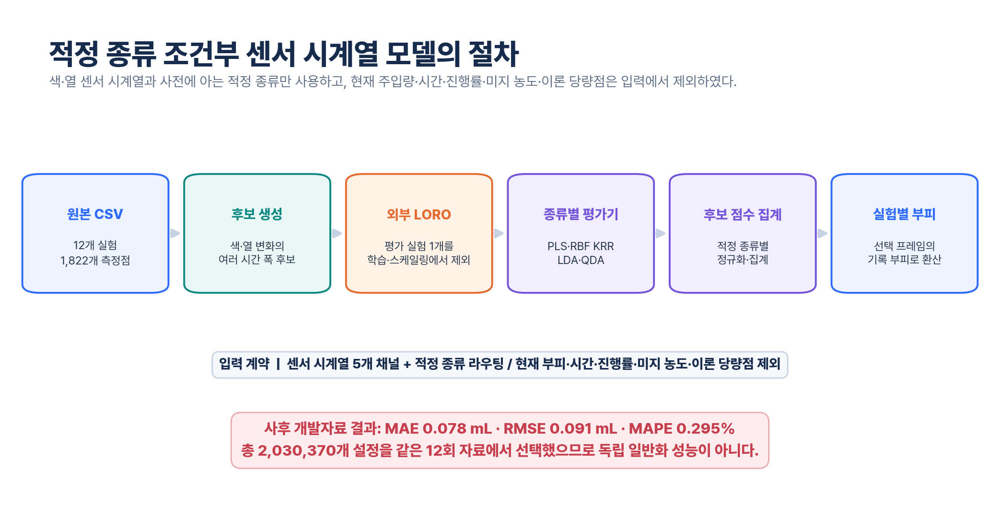
그림 10. run 단위 분리, frame 분류와 종류별 후보 선택으로 이어지는 명목 이론부피 개발자료 재현 모델의 절차.
run 하나를 평가용으로 제외하고 나머지 11개 run으로 학습하는 leave-one-run-out 구조를 사용하였다. 모델 후보 탐색 과정에서는 모든 적정 종류의 나머지 run을 함께 학습하는 범위와, 평가 run과 같은 적정 종류의 나머지 두 run만 사용하는 범위를 모두 비교하였다. 시료 농도 자체는 모델 입력으로 사용하지 않았다. 최종 live artifact는 사용자가 선택한 적정 종류에 맞는 모델과 집계 방식을 적용한다.
모델·구간 폭·집계 방법을 조합한 후보 3,136개를 같은 12개 run에서 비교한 뒤 적정 종류별 최종 구성을 골랐다. 따라서 다음 결과는 독립 외부검증 결과가 아니라 개발 데이터에서의 모델 선택 결과이다.
또한 평가 run의 재현값은 해당 CSV가 끝난 뒤 전체 프레임 점수를 집계해 계산하였다. 사람이 예상 종말점 부근에서 실험을 멈췄기 때문에 CSV에 포함된 최종 부피 범위 자체가 간접적인 단서가 될 가능성이 있다. 그러므로 이 후처리 수치를 실시간 인과적 자동정지 성능으로 해석하지 않았다.
명목 이론부피를 (V_i), 개발자료 재현값을 (\hat{V}_i), run 수를 (N)이라고 할 때 다음 지표를 사용하였다.
초기에는 한 run에서 여러 색·열 후보를 추출하고 회귀 모델로 후보 오차를 보정하였다. 이 분석의 전체 MAE는 2.31 mL, RMSE는 3.01 mL, MAPE는 8.81%였다.
이후 현재 프레임이 명목 이론 당량점 주변 구간에 속하는지를 분류하고, 점수가 높은 프레임의 부피를 집계하는 방식으로 변경하였다. 같은 12개 개발 자료에서 적정 종류별 모델과 집계 방식을 선택했을 때 다음 결과를 얻었다.
최종 개발 구성은 강산-강염기, 강산-약염기와 약산-약염기에 Extra Trees 분류기를, 약산-강염기에 Random Forest 분류기를 사용하였다. 모델은 구간에 속할 확률을 출력하고, 확률이 높은 프레임의 현재 주입량을 상위 후보 평균 또는 가중 중앙값으로 합쳐 run당 예측 부피 하나를 만들었다.
[표 8] 적정 종류별 개발 데이터 결과
| 적정 종류 | 선택 분류기 | MAE | RMSE | 개발 데이터 MAPE |
|---|---|---|---|---|
| 강산-강염기 | Extra Trees | 0.14 mL | 0.16 mL | 0.47% |
| 강산-약염기 | Extra Trees | 0.23 mL | 0.31 mL | 0.67% |
| 약산-강염기 | Random Forest | 1.09 mL | 1.32 mL | 3.49% |
| 약산-약염기 | Extra Trees | 0.11 mL | 0.13 mL | 0.45% |
| 전체 | 적정 종류별 선택 | 0.39 mL | 0.69 mL | 1.27% |
이 표는 수집한 12개 개발 run에서 얻은 수치이다. 적정 종류별로 가장 잘 맞는 구성을 같은 자료에서 고른 결과이므로, 새로운 용액과 새로운 날짜의 실험에서도 같은 오차가 나온다는 뜻은 아니다.
[표 9] run별 명목 이론부피와 개발자료 재현값
| 적정 종류 | 시료 농도 | 명목 이론부피 | 개발자료 재현값 | 절대편차 | 상대편차 |
|---|---|---|---|---|---|
| 강산-강염기 | 0.10 M | 20.00 mL | 19.94 mL | 0.06 mL | 0.30% |
| 강산-강염기 | 0.15 M | 30.00 mL | 29.74 mL | 0.26 mL | 0.86% |
| 강산-강염기 | 0.20 M | 40.00 mL | 40.10 mL | 0.10 mL | 0.25% |
| 강산-약염기 | 0.10 M | 20.00 mL | 20.08 mL | 0.08 mL | 0.39% |
| 강산-약염기 | 0.15 M | 30.00 mL | 29.90 mL | 0.10 mL | 0.35% |
| 강산-약염기 | 0.20 M | 40.00 mL | 40.51 mL | 0.51 mL | 1.29% |
| 약산-강염기 | 0.10 M | 20.00 mL | 20.82 mL | 0.82 mL | 4.10% |
| 약산-강염기 | 0.15 M | 30.00 mL | 30.33 mL | 0.33 mL | 1.08% |
| 약산-강염기 | 0.20 M | 40.00 mL | 37.89 mL | 2.11 mL | 5.27% |
| 약산-약염기 | 0.10 M | 20.00 mL | 20.16 mL | 0.16 mL | 0.78% |
| 약산-약염기 | 0.15 M | 30.00 mL | 30.15 mL | 0.15 mL | 0.48% |
| 약산-약염기 | 0.20 M | 40.00 mL | 40.04 mL | 0.04 mL | 0.10% |
12개 중 상대오차가 5% 이내인 run은 11개였다. 가장 큰 오차는 약산-강염기 0.20 M의 5.27%였다.
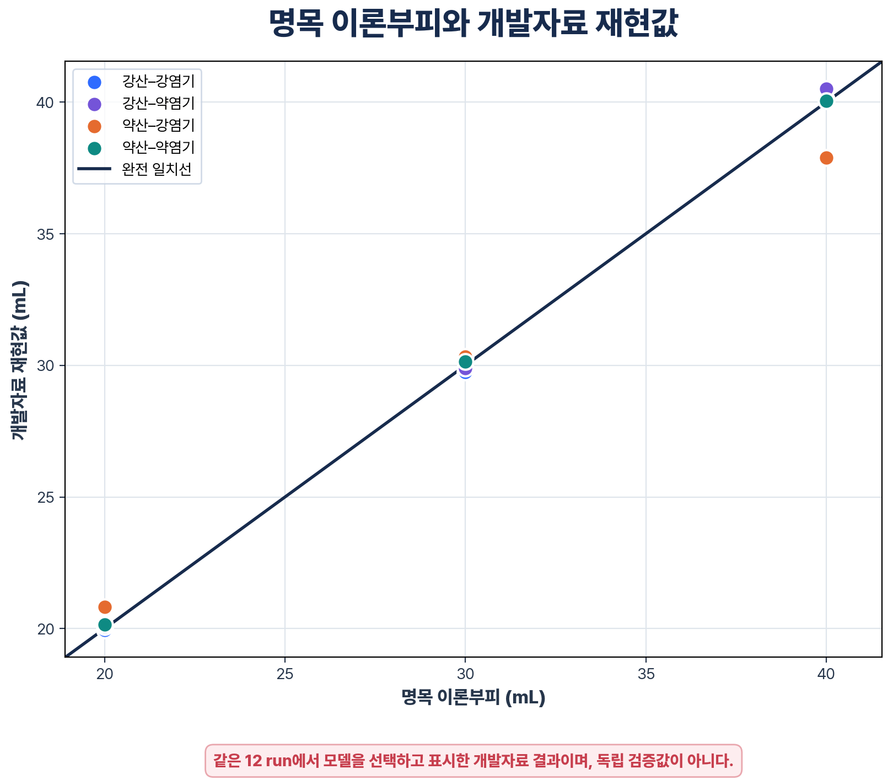
그림 11. 명목 이론부피와 개발자료 재현값. 그래프의 근접성은 같은 12개 자료에서 모델을 선택한 개발 결과이며 독립 검증을 의미하지 않는다.
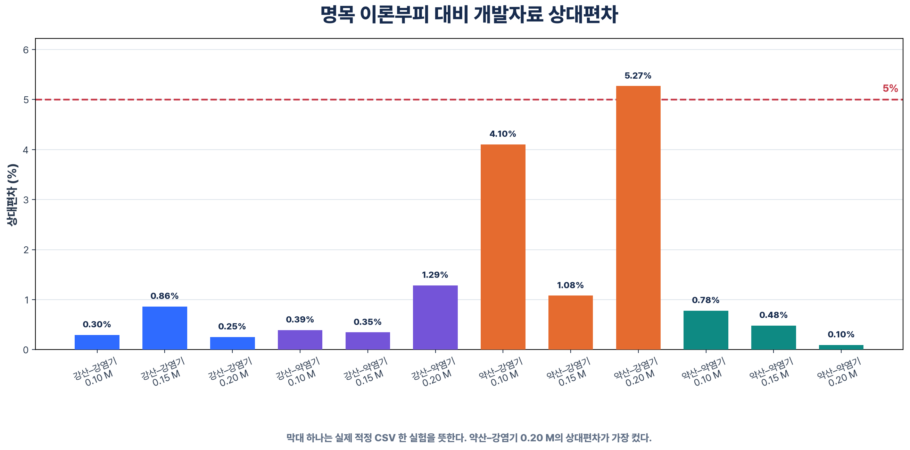
그림 12. run별 명목 이론부피 대비 상대편차. 약산-강염기 0.20 M run은 5%를 넘었다.
개발 데이터에서는 약산-강염기의 MAPE가 3.49%로 가장 높았다. 그러나 적정 종류별 run이 3개뿐이고 모델도 같은 자료에서 선택했으므로, 이 차이를 반응계의 일반적 난이도로 확정할 수 없다. 약산-약염기에서 MAPE가 낮았다는 사실도 메틸오렌지 색 변화가 이 적정의 실제 당량점을 정확히 나타냈다는 증거는 아니다. 모델은 색·열 특징뿐 아니라 현재 주입량과 실험 조건도 함께 사용한다.
또한 본 실험은 색상과 열화상을 동시에 기록했지만, 동일 평가 구조에서 색상만 사용한 모델과 색상+열화상 모델을 독립적으로 반복 비교하지 못하였다. 따라서 열화상 추가가 정확도를 얼마나 높였는지는 이번 결과만으로 단정하지 않았다.
개발 자료에서는 MAPE 1.27%가 나왔지만, 같은 12개 run에서 3,136개 후보를 비교해 적정 종류별 구성을 선택한 값이다. 따라서 이 결과는 명목 이론부피를 후처리로 재현한 탐색 결과이며, 새 실험에 대한 일반화 정확도나 실시간 자동정지 성능으로 보지 않았다.
12개 실험을 마친 뒤 Windows 앱에 선택형 자동정지 기능을 추가하였다.
c를 보낸다.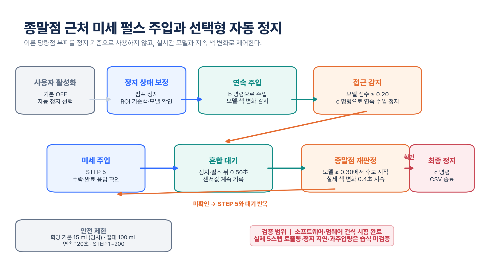
그림 13. 실시간 구간 분류기의 확인으로 시작된 실제 ROI 색 변화가 0.4초 지속될 때 정지 명령을 보내는 후속 소프트웨어 흐름. 100 mL 상한은 같은 PC에서 실행되는 소프트웨어 기준이며 별도 하드웨어 차단기가 아니다.
자동정지 모듈 시험 8건과 Windows 수집기 시험 136건을 수행하여 총 144건이 통과하였다. 시험에서는 초기색 보정, 순간 색 변화 무시, 모델 확인 전 정지 금지, 지속 색 변화 판정, 밝기 변화에 대한 오검출 방지, 이론 당량점 비의존성, 최대량 정지와 Windows 수집기 연동을 확인하였다.
그러나 실시간 분류기는 같은 12개 개발 run에서 만든 모델을 사용한다. 실제 산·염기 wet-run에서 정지 명령 지연, 물리적 모터 정지 시점, 실제 토출 부피와 과주입량을 반복 측정하지 않았다. 앱은 정지 명령을 전송하지만 펌웨어에서 실제 모터 정지 완료 응답을 받지 않는다. 시리얼 브리지가 끊겨 있으면 정지 명령은 실패 상태로 기록될 뿐 Arduino가 스스로 차단하지 않는다. 100 mL 최대량 기준도 별도의 하드웨어 차단기가 아니라 같은 PC 소프트웨어에서 처리한다. 그러므로 본 보고서에서는 자동정지를 후속 소프트웨어 구현과 단위·통합시험 결과로만 제시하고, 새 습식 실험의 정확도나 안전성 검증 결과로 사용하지 않았다.
ML 점수와 지속적인 실제 색 변화를 함께 확인하는 기본 꺼짐 상태의 자동정지 구조를 소프트웨어로 구현하였다. 다만 기존 12회 실험은 사람이 정지했으며, 실제 산·염기 조건에서 물리적 정지 부피와 과주입량을 측정하지 않았다. 따라서 구현 여부와 습식 성능 검증을 분리하였다.
[표 10] 연구 결과의 증거 수준
| 항목 | 현재 확인된 근거 | 본 보고서의 표현 범위 |
|---|---|---|
| Windows 통합 수집 | 실제 산·염기 적정 12 run, 1,822행 | 실제 구동·통합 수집 완료 |
| 펌프 유량 | 이론 0.962 mL/s, 앱 설정값 0.99 mL/s | 시간 기반 계산 주입량 사용, 보정 불확도 미산출 |
| ML 1.27% | 같은 12 run에서 모델 선택·평가 | 개발 데이터 탐색 결과 |
| 열화상 | 공식 변환 경로의 ROI 값과 raw 기록 | 겉보기 표면온도 보조 관찰값 |
| 현재 수집 성능 | 저장 raw+공식 DLL 250 frame 시험, 24.93행/s·p95 8.91 ms·누락 0행 | 처리 경로 성능 확인, 실제 USB 습식 25 fps는 별도 확인 필요 |
| 자동 ROI | 설정 단계에서의 선택형 후보 탐색과 관련 시험 | 녹화 중 자동 추적 성능으로 표현하지 않음 |
| 자동정지 | 단위·통합시험 144건(자동정지 8건+Windows 수집기 136건) 통과 | 후속 기본 꺼짐 구현, 실제 습식 정지 성능 미검증 |
| Android | 별도 작업에서 개발 중인 확장 코드 | 본 연구의 습식 실험·성능 결과에서 제외 |
첫째, 제작한 펌프와 두 카메라, 화학 계산 및 CSV 저장을 실제 적정에서 함께 구동할 수 있었다.
둘째, 적정 중 색·열화상·계산 주입량을 같은 시간축에 저장하여 실험 뒤 다시 그래프로 비교할 수 있었다.
셋째, 직접적인 정답 정보와 완결된 실험의 진행 정보를 feature에서 제외한 상태로 run 단위 예측 구조를 만들었다.
넷째, 개발 데이터에서 적정 종류별 센서 변화와 모델 결과의 차이를 확인하고, 실패 run까지 포함한 원자료 기반 결과를 제시하였다.
독립 표정과 반복실험이 없으므로 오차 원인의 크기를 순서대로 확정할 수 없다. 가능한 원인은 다음과 같다.
[표 11] 가능한 오차 원인과 확인 범위
| 가능한 원인 | 결과에 미칠 수 있는 영향 | 현재 자료로 분리 가능한가 |
|---|---|---|
| 명목 농도와 실제 농도의 차이 | 이론 당량점 target 자체가 이동 | 아니오 |
| 시간 기반 펌프 부피 환산 | 계산 주입량과 실제 토출량 차이 | 원자료 부족 |
| 지시약 변색 범위 | 종말점과 당량점의 차이 | 관찰 종말점 값 미입력 |
| 교반·주입 위치 | 국소 색·열 변화와 전체 반응의 시간 차이 | 아니오 |
| ROI·조명·반사 | 색과 겉보기 표면온도 feature 변동 | 일부 품질필드만 확인 가능 |
| 기록 행률과 동기화 | 빠른 변화를 놓치거나 시각이 어긋남 | CSV 시각으로 일부 확인 가능 |
| 적은 run과 모델 선택 | 개발 수치의 낙관 편향 | 독립 blind 자료 필요 |
따라서 특정 조건의 오차를 용액 조제, 펌프 또는 모델 하나의 문제로 단정하지 않았다.
본 연구에서는 시린지 펌프, 일반 카메라, Mini2 열화상 카메라와 Windows 대시보드를 실제 적정 과정에서 통합 구동하였다. 네 가지 적정 종류와 세 농도에서 얻은 12개 CSV에는 색 변화, 겉보기 표면온도 변화, 시간 기반 계산 주입량과 화학 조건이 같은 시간축으로 기록되었다. 이 자료는 실험이 끝난 뒤에도 어느 부피에서 어떤 변화가 나타났는지 다시 확인할 수 있게 한다.
현재 Windows 앱은 모델이 선택한 당량점 부피로 미지 시료 농도를 역산하고, pKa·pKb와 적정 종류를 이용해 예측 pH를 모델값으로 표시한다. 실험 뒤 개선한 수집 경로는 저장 raw frame과 공식 DLL 시험에서 약 25행/s와 기록 누락 0행을 보였지만, 기존 12개 자료의 저장률이나 새 습식 실험의 성능으로 소급하지 않았다.
수집한 개발 자료에서는 적정 종류별 구간 분류와 부피 집계를 적용했을 때 명목 이론부피와의 MAE 0.39 mL, RMSE 0.69 mL, MAPE 1.27%를 얻었다. 이 수치는 독립 검증값이 아니라 같은 12개 개발 run에서 모델을 선택한 결과이다. 따라서 본 연구는 “새 실험에서도 1.27% 정확도를 보이는 자동 적정기”를 입증한 것이 아니라, 실제 장치에서 수집한 멀티모달 자료로 명목 이론부피를 재현해 본 개념 검증이다.
본 작품의 실용적 가치는 실험 과정이 CSV로 남는다는 점에 있다. 학교 적정 실험에서 관찰한 순간만 기록하는 대신 색·열화상·주입량을 다시 검토할 수 있으며, 향후 표정된 용액과 반복자료를 확보하면 지시약 종말점, 열화상 후보와 모델 재현값을 같은 기준에서 비교할 수 있다. 후속 자동정지 기능도 이러한 데이터 구조를 제어 연구로 확장한 사례이지만, 실제 습식 자동정지의 정확도와 안전성은 별도의 검증 대상으로 남긴다. Android 확장은 별도 개발 중이므로 본 보고서의 결과에 포함하지 않았다.
후속 탐구에서는 표정한 적정액과 독립 기준법으로 실제 당량점 기준을 확보하고, 적정 종류·농도별 반복 실험과 다른 날짜의 blind test를 수행할 필요가 있다. 또한 color-only, thermal-only, color+thermal을 동일 조건에서 비교하여 열화상 신호의 추가 기여도를 분리하고, 자동정지 명령 시점·모터의 실제 정지 시점·최종 토출 부피를 각각 측정해 제어 성능과 과주입량을 검증해야 한다.
본 연구에서는 생성형 AI를 프로그램 구조 설계, 코드 오류 원인 탐색, CSV 구조 점검, 분석 스크립트 작성 보조와 보고서의 주장·수치 교차검토에 활용하였다. AI가 제안한 코드는 연구자가 저장소에서 실행하거나 실제 장치 동작과 비교한 뒤 채택 여부를 결정하였다.
시린지 펌프 제작, 장치 조립, 시약 준비, 실제 적정 수행과 원본 CSV 수집은 연구자가 직접 수행하였다. 생성형 AI로 가상의 실험값을 추가하거나 원본 CSV의 측정값을 수정하지 않았다. 보고서의 수치는 원본 CSV, 분석 코드와 저장된 결과 파일에서 다시 확인하였다.
[표 12] 생성형 AI 활용 이력
| 도구 | 버전·모델 | 활용 시점 | 활용 범위 | URL |
|---|---|---|---|---|
| OpenAI Codex | GPT-5.5 | 2026년 7월 14일 | 저장소·수치 감사, 코드 및 보고서 구조 검토 | https://openai.com/codex/ |
※ 위 표에는 실제 연구 과정에서 사용한 다른 생성형 AI 도구가 있다면 도구명, 모델·버전, 사용 시점, URL과 활용 범위를 같은 형식으로 추가한다.
Android 앱은 Windows 본경로와 분리된 작업에서 개발 중인 확장 시제품이다. 본 보고서의 12개 습식 실험, 열화상 변환·25 fps 처리 시험과 머신러닝 결과에는 Android 경로를 사용하지 않았다. 따라서 Android의 Mini2 실시간 수집, 펌프 연결, 로컬 CSV 저장과 모델 적용은 본 연구의 완료 기능이나 검증 결과로 주장하지 않고 별도 개발 항목으로 남겼다.
[표 13] 보고서 수치 재현 자료
| 내용 | 저장 자료 |
|---|---|
| 12개 원본 습식 실험 | 머신러닝용 파일모음/*.csv |
| 초기 곡선 후보 회귀 결과 | docs/ml_12_run_full_results.md |
| 현재 개발 데이터 요약 | docs/ml_current_volume_no_progress.md |
| run별 현재 예측값 | data/ml/current_volume_no_progress/best_predictions.csv |
| 현재 모델 비교표 | data/ml/current_volume_no_progress/model_comparison.csv |
| 모델 학습 코드 | tools/train_equivalence_current_volume.py |
| live 모델 artifact | data/labeled/typewise-current-volume-classifier.pkl |
| Windows 수집기 | tools/windows_live_collect.py |
| 실시간 처리 성능 검증 | docs/LIVE_PERFORMANCE_VALIDATION.md |
| 자동정지 후속 모듈 | auto_titrator/auto_stop.py |
| 자동정지 설계·시험 범위 | docs/AUTO_STOP_VALIDATION.md |